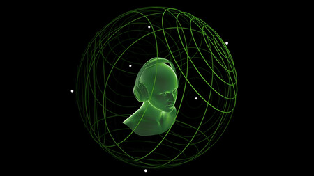

Videojuegos|Sonido espacial 3D
Los videojuegos son un formato fascinante. Te puedes emocionar con una película o una novela, desde luego. Incluso sentir terror o desarrollar cierta empatía por los protagonistas y antagonistas de una obra. Pero hay sensaciones concretas, como el logro, el peligro o la libertad de embarcarse sin ritmo trazado en una apasionante aventura, que -más allá del mundo real- encuentran su medio natural en las experiencias de PC, consolas y móviles. Y, en este aspecto, el sonido espacial 3D es una pieza esencial para entender el siguiente paso evolutivo del videojuego. Así, el juego a 4K (o más) y los rendimientos por encima de los 60FPS ya no son los únicos frentes abiertos de cara a medir el despliegue técnico y artístico alcanzado: el sonido ha ganado un merecido protagonismo en esta nueva etapa. Y, para muestra, la siguiente demostración de sonido espacial de Xbox.
Porque más allá de los nuevos matices que hoy se viven y se palpan en los videojuegos en pantalla, el nivel de inmersión que se alcanza a través del sonido espacial 3D es alucinante. De cómo, a través de sonidos, es posible engañar a nuestro cerebro y ubicarnos en lo que está ocurriendo en la pantalla. Es más, Sony y Microsoft son plenamente conscientes de esta realidad. Por un lado, PS5 cuenta con su propio sistema audio 3D Tempest, y Xbox apuesta muy fuerte por el sonido envolvente con apps dedicadas y su propio software y hardware dedicado. ¿El objetivo común? Llevar la experiencia de juego al siguiente nivel. Y lo interesante es cómo se está logrando. A grandes rasgos, el sonido espacial 3D, también conocido como 360 Reality Audio, es el siguiente paso con respecto al sonido envolvente: el oyente no solo recibe información de todo su entorno, que también, sino que además está completamente sumergido en la experiencia a través de diferentes focos de sonido que se manifiestan de manera individual, coexisten y, a través de algoritmos avanzados, trasmiten lo que ocurre en pantalla. Algo que se entiende mejor a través del siguiente vídeo.
Lógicamente, no todos los videojuegos aprovechan del mismo modo el sonido espacial 3D. No es lo mismo un mundo abierto, un shooter en primera persona o un Survival Horror que un clásico. Y, por regla de tres, no todos los juegos están optimizados para la experiencia de Sonido 360. Aunque, claro, una vez experimentados los horrores de Resident Evil Village o las carreras de Dirt 5 en sonido espacial 3D, cuesta volver a los sistemas de sonido 5.1 y 7.1. La revolución del sonido espacial: más allá de lo que se ve y lo que se siente en los videojuegos
Podría parecer una afirmación pretenciosa, pero la instauración del sonido espacial 3D en los videojuegos es un salto de calidad equivalente al que dieron los videojuegos al pasar del 2D a los polígonos y entornos tridimensionales. Lógicamente, eso hace que marcas como Sony, Apple, Razer, Corsair o Microsoft no ahorren al investigar la manera más eficiente de integrarlo en nuestras partidas. Partamos desde lo básico: si deseamos estrenar unos altavoces o un sistema de sonido, por lo general existen diferentes alternativas a la hora de obtener información desde diferentes canales.
El sonido estéreo (o estereofónico) permite distinguir al oyente entre la información proveniente de izquierda o derecha. Eso es -en esencia- dos canales o más. Un paso más allá encontramos la tecnología de sonido envolvente, el cual nos permite reconocer más focos de sonido provenientes de prácticamente cualquier dirección ampliando el número de canales a cinco (5.1) o siete (7.1). Algo muy útil en los videojuegos, ya que a través de esto podremos ubicarnos en un entorno. Así llegamos al sonido espacial 3D, el cual es, hasta la fecha, la mejor y más inmersiva experiencia de sonido. No solo tiene en cuenta la dirección, sino que envuelve completamente al jugador y le permite identificar y definir diferentes tipos de información en función de su propia localización dentro del juego. La premisa de la que parte el sonido espacial no es un concepto nacido en el nuevo milenio: en 1980 el inventor argentino Hugo Zuccarelli desarrolló el sistema Holofónico de grabación y reproducción de sonidos. Simplificándolo demasiado, buscaba ser el equivalente audible de los hologramas tridimensionales de la época.
A fin de cuentas, el sistema de Zuccarelli y el sonido espacial 3D persiguen el mismo objetivo: reproducir sonidos tridimensionales que de modo que nuestro propio cerebro los pueda localizar o percibir de manera creíble. En el caso de los videojuegos, como es natural, hay nuevos matices que sumar a la ecuación. Como es de esperar, mientras las primeras consolas y sistemas de juegos de 8-Bits comenzaban a aparecer en nuestras pantallas, varios artistas y formaciones comenzaron a grabar y experimentar con el sonido holofónico, incluyendo álbumes como 'Keep Under Cover' de Paul McCartney, 'The Pros and Cons of Hitchhiking' de Roger Waters o el mítico 'The Final Cut' de Pink Floyd. Lógicamente, que haya discos que integrasen sonidos tridimensionales en la década de los 80 no quiere decir que cualquier juego actual se pueda beneficiar del sonido sonido espacial 3D. Como comentamos al principio, la diferencia entre el clásico sonido estéreo y el sonido espacial equivale a comparar la vibración de un mando tradicional con un sistema de vibración HD (como el de los Joy Cons) o el sistema de vibración háptica del DualSense. De este modo, si estamos jugando a Resident Evil Village notamos lo que ocurre en otras habitaciones, incluyendo las superiores e inferiores. Y lo mismo se aplica en entornos mucho más abiertos. Desde la emoción de los circuitos de Forza Horizon 4 a la grandeza de Night City, el mundo abierto de Cyberpunk 2077, el cual se beneficia del sonido espacial a través de la tecnología Dolby Atmos para ofrecer una nueva capa de inmersión al jugador.
Qué esperar del sonido especial en esta nueva etapa del videojuego
No hace falta ser un sibarita del sonido para quedarse alucinado con el audio 3D espacial: atravesar un terreno complicado en Outriders ya gana una enorme cantidad de matices, tanto en combate como durante las exploraciones. Es más, estamos seguros de que los bombazos que están por llegar a consolas y PCs darán un protagonismo muy especial al sonido espacial. Incluyendo el intenso multijugador de Halo Infinite, el mundo de Horizon Forbidden West y los susurros que escucharemos al jugar a Senua's Saga: Hellblade II. Sobre todo, de cara unos avances cada vez mayores y más ambiciosos: en 2019 Microsoft nos hablaba de Project Acoustics, su propio motor de acústica de ondas para experiencias interactivas en 3D. Definido mal y pronto, podemos decir que es una especie de trazado de rayos orientado al sonido.La idea es que al jugar sea posible modelar efectos de onda como efectos de oclusión, obstrucción o reverberación en escenas complejas sin tener que requerir marcado de zona manual. Dicho de otro modo, será posible generar efectos de sonido y ecos que reaccionen en función del tipo de superficie y la posición de determinados objetos. Tomando como referencia, en este caso, la posición del propio jugador. Una verdadera pasada. Sobra decir que el sonido gana un protagonismo esencial para los jugadores y apasionados por los videojuegos que sufren de deficiencias e impedimentos. Por poner un ejemplo, existe una comunidad de jugadores invidentes que disfrutan jugando a Street Fighter guiándose por los sonidos del juego.
Ir al comienzo del documento